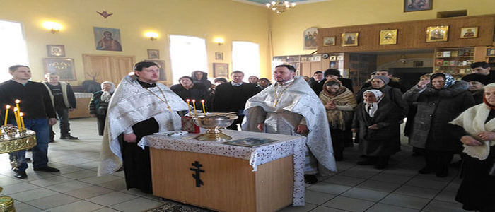
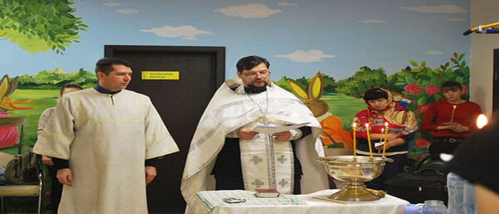

Обращение настоятеля храма к прихожанам. В карусель также можно вынести самые важные новости, статьи, объявления, праздники.
Обращение настоятеля храма к прихожанам. В карусель также можно вынести самые важные новости, статьи, объявления, праздники.

Обращение настоятеля храма к прихожанам. В карусель также можно вынести самые важные новости, статьи, объявления, праздники.
Расписание богослужений
по будням
07:30 - исповедь
08:00 - Литургия
17:00 - вечерняя служба (накануне)
по праздничным и воскресным дням
06:30 - исповедь
07:00 - Литургия (ранняя)
08:30 - исповедь
09:00 - Литургия (поздняя)
17:00 - вечерняя бдение (накануне)
Молитвенно просим Вас внести свою лепту в дело возрождения исторической и духовной святыни - храма в честь святителя Николая чудотворца.
Посылаемое все надобно принимать, как от руки Господней: скорбное ли - к терпению, приятное ли - к благодарению.